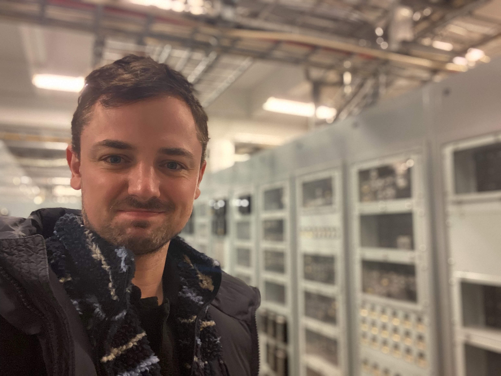

I am a researcher in Technology and Social Change at Linköping University.
My work examines the relationships between technology, speculative thinking, and infrastructures designed to operate across deep time, with a particular focus on the long-term management of nuclear waste.
I hold a PhD in Human Geography from the University of Bristol (UK). Prior to joining Linköping University, I was a Lecturer in Geography at UNSW Canberra (Australia). I have also held teaching positions at Swansea University (UK), the European School Brussels (Belgium), and the University of Bristol.
My research is organised around three interconnected areas:
Nuclear Futures
My current research focuses on the governance and management of highly radioactive nuclear waste over extended temporal horizons (up to 100,000 years). This work examines how societies design, communicate, and maintain infrastructures intended to endure far beyond contemporary institutional timescales.
Key questions include how information about nuclear waste repositories can be transmitted to future generations; how accountability for the stewardship of “final” repositories is distributed across human and non-human actors; and how political and civil society groups can effectively oversee the technical systems and organisational practices developed to secure these sites over the long term.
Speculative Thinking
My research develops approaches to speculative thinking informed by continental philosophy, including the work of Isabelle Stengers, Didier Debaise, Gilles Deleuze, and Bruno Latour, alongside developments in human geography such as non-representational theory, new materialism, and posthumanism.
Within this context, speculative thinking is not treated as an approach for expanding what counts as the empirical field. Speaking to debates in cultural geography, it involves experimenting with concepts capable of engaging with manners of experience that exceed the representational limits of the embodied individual. In this sense, speculative thinking becomes a way of exploring how experience might be articulated beyond the conventions of the phenomenological subject.
Technologies
My work on technology contributes to debates in social theory and human geography through an engagement with the philosophy of Gilbert Simondon. It advances an ontogenetic approach in which technologies are understood not simply as extensions of human capacities, but as processes of material individuation governed by their own operational logics.
From this perspective, technologies are constituted through non-human processes that cannot be reduced to organic evolution or human intention. One implication of this approach is a rethinking of thought and subjectivity in relation to material infrastructures, where forms of cognition and agency emerge through assemblages that exceed the boundaries of the human body.